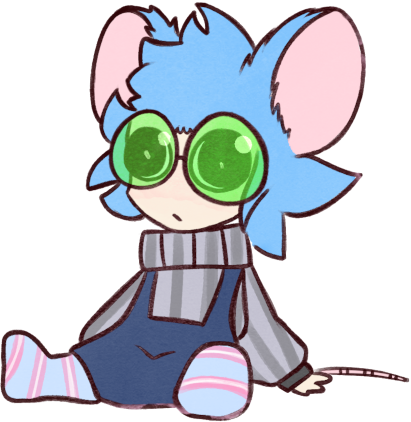
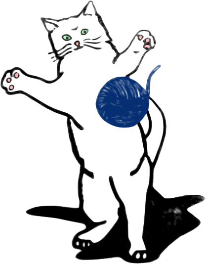
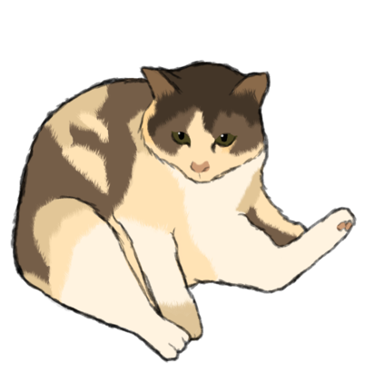
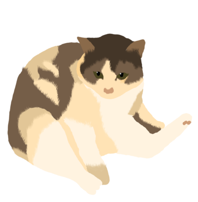
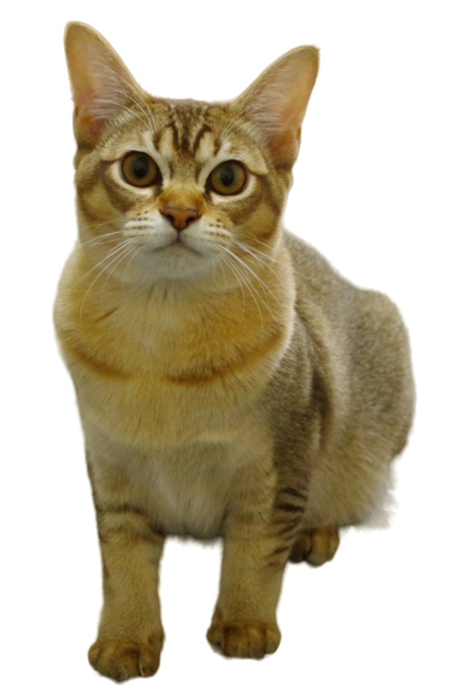
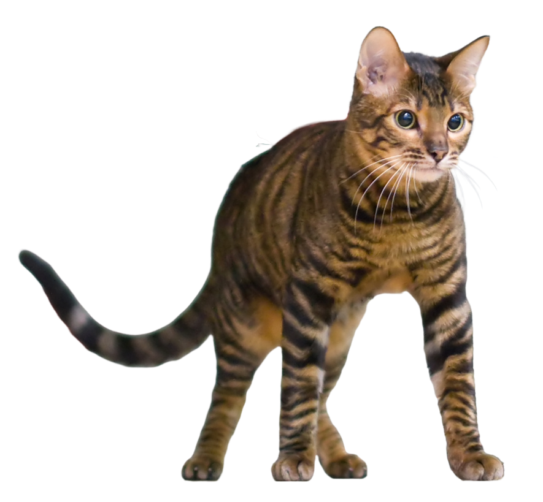
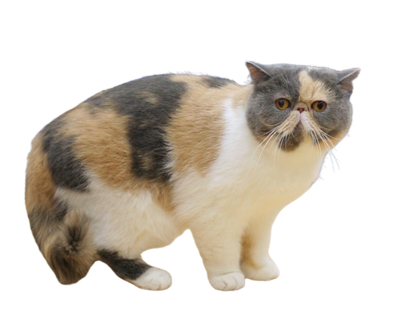

Сборки и версии
Каждому миру —
свой запуск
Разделяй игровые профили и запускай Minecraft с нужной версией и загрузчиком.
Удобно запускай разные сборки, входи через Ely.by и находи моды в Modrinth — всё в одном месте.

Создан на основе открытого кода Prism Launcher и настроен для простого старта в Minecraft Java.
Разделяй игровые профили и запускай Minecraft с нужной версией и загрузчиком.
Каталог модов и поддерживаемый источник загрузок — Modrinth.
Подключай поддерживаемый аккаунт Ely.by и продолжай играть со своим профилем.
Выбирай одного из семи персонажей — от знакомых Kitteh, Rory и Teawie до новых породистых котиков. А если хочется своего героя, импортируй изображение прямо в настройках лаунчера.
Посмотреть проект





Скачай установщик MatronixPrismLauncher для Windows. Версия и ссылка обновляются с выходом новых релизов.
Скачать установщикWindows · v0.1.0-alpha.10 Релиз и заметкиЭто предварительная версия: возможны ошибки. Установщик распространяется через GitHub Releases.
MatronixPrismLauncher основан на открытом коде лаунчера и развивается как самостоятельный проект. Он не связан с Mojang, Microsoft, Prism Launcher или Ely.by.
Код и обновления на GitHub